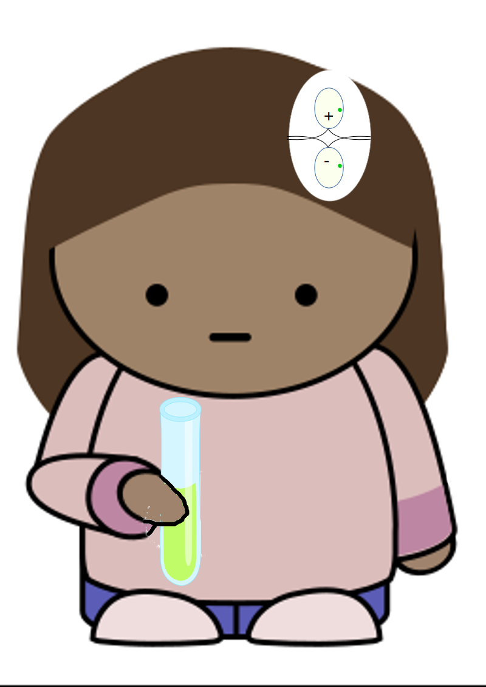

503: '平らな頂き'事件¶
依頼人¶
三十代後半の女性。痩せぎす長身で短髪。以前の職場で知り合った男性と同居。
依頼内容¶
同居五年目の記念に昨秋ロンドンに旅行した。ロンドンの安ホテルに五泊して名所を見て回った。ホテルの朝食でラテン系のカップルと良く顔を合わせた。女性のほうは大柄で昔のイタリア映画にでも出てきそうな肉感的な容姿だったが、男はどこにでもいるただの太った中年としか見えなかった。彼らは同じフロアに室をとっていた。最初の夜、女の声が幾度も廊下に響いた。あのときの声だということはすぐに分かって、二人で顔を見合わせて笑った。しかし、その声はロンドンを立つまで毎晩続いた。彼女はそのたびに笑ったが、彼の方はだんだん笑わなくなった。
帰国以来、どちらも口には出さないが、なんとなく気まずい状態が続いている。
といったような話で、依頼の内容ははっきりしない。ともあれ、事前に自称秘書が軽くうけ合ってしまっていたので、少し調べてみることにした。
調査報告¶
薄膜¶
Love is the mysterious vital attraction which draws things together,
closer, closer together. For this reason sex is the actual crisis of
love. For in sex the two blood-systems, in the male and female,
concentrate and come into contact, the merest film intervening.
Yet if the intervening film breaks down, it is death.
愛とは、物同士をより近く、より近くへと引き寄せる不可思議な引力である。
これこそは、セックスが愛の切迫した危機となる理由である。
セックスにおいて、あいだには極薄い膜しかないような状態で、
男性と女性の二つの血液システムが集まり接触する。しかし、
その膜が破れるなら、それは死を意味する。
So there you are. There is a limit to everything. There is a limit
to love.
そのとおり。すべて物事には限界がある。愛にも限界がある。
The central law of all organic life is that each organism is
intrinsically isolate and single in itself.
すべての有機的生命の中心原理は、個々の有機体は本来的に孤立していて、
それ自体として充足しているということである。
The moment its isolation breaks down, and there comes an actual
mixing and confusion, death sets in.
その孤立が破られた瞬間、混乱が流れ込み、死が侵入する。
This is true of every individual organism, from man to amoeba.
これは、人間とアメーバとを問わず、すべての個々の生命体についての真実である。
But the secondary law of all organic life is that each organism
only lives through contact with other matter, assimilation, and
contact with other life, which means assimilation of new vibrations,
non-material. Each individual organism is vivified by intimate
contact with fellow organisms: up to a certain point.
が、有機生命の第二の法則は、それぞれの有機体は他の物質との接触・同化を通じて、
また、他の生命との接触、すなわち、非物質的な、新しい振動を同化することでのみ、
生きることができるということである。それぞれの有機体は仲間の有機体と親密な接触 をもつことで活性化する、或る点までは。
(D. H. Lawrence, STUDIES IN CLASSIC AMERICAN LITERATURE,
VI. EDGAR ALLAN POE, 1923)
ローレンスの想像のなかでは、個体はごく薄い膜でおおわれた孤立した存在なのだが、外の物質を同化し、他の生命体の振動を吸収することでのみ生きることができる。しかし、その薄い被膜が破られてしまえば、それは個体の死を意味する。その手前ぎりぎりの地点を探るのが、肉体的か精神的かを問わず、愛の行為である。
真核生物(Eukaryota 1 )の99.99%以上は、雌雄の配偶子の結合をもたらする有性生殖(以下、「生殖」という 2 )を行うのだという [Otto08] 。そして、生殖においては何らかの形で、雌雄それぞれを覆う境界が破壊される。
{kind=link}
単細胞性の緑藻類の一種のクラミドモナス・レインハルディ（Chlamydomonas reinhardtii）では、個々の細胞がプラス型とマイナス型のいずれかの接合型に形を変える。これら二種の接合型を持った細胞の鞭毛が互いにからみあうと、それぞれの細胞膜が外れて二つの細胞が融合する。形成された接合体は分裂して、新たに四つの単細胞を発生する [Sekimoto17] 。
セックスが死を意味するのは生物の世界では珍しいことではない。なかでも興味深いのは、sexual cannibalism(性的喰殺)と呼ばれる、交尾においてメスがオスを捕食してしまう現象である。
かまきりでは、オスが交尾後にメスに食われることは良く知られている。しかし、これは好んで食われているわけではない。飢えたメスに、性に飢えたオスが不用意に近づくと食べられてしまう。しかし、普通はオスのほうで、腹をへらして攻撃的になっているメスにはあわてて近づかないようにするし、時間をかけて自分がエサではなくて同種のオスだということをメスに理解させようとする [Brown12] 。これは、パートナーとしてのオスの適格性を決める、一種のスクリーニング・システムだともいえる。また、オスの方でも、痩せていて飢えた様子のメスをさける傾向があるので、そこにも選別のシステムが働いている、とはいえ、いくら注意を払ったとしても、オスにとっては命がけの行為であることには違いない。
一方、オーストラリアの背赤クモでは、オスは交尾時間をできるだけ長くし、受精卵の数を最大化するために、交尾のあいだ、自分の身をメスに食べさせる。また、一度オスを食べてしまったメスは、別のオスの接触をこばむ確率が高くなる [And96] 。メスがもう十分に受精したと感じるからか、もうオスを食わされるのはごめんだと感じるからなのかは不明である。
このような背赤クモのオスの姿は、ある種の嗜好をもった男には理想と思えるかもしれない。
思ふに、お定さんに変質的なところはないが、相手の吉さんには、
いくらかマゾヒズムの傾向があつたと思ふ。吉さんは恋の陶酔の
なかでお定さんにクビをしめてもらうのが嬉しいといふ癖があつた。
一般に女の人々は、本当の恋をすると、相手次第で誰しもいくらかは
男の変質にオツキアヒを辞せない性質があり、これは本来の変質とは違ふ。
坂口安吾、阿部定さんの印象 （青空文庫）
Sexual cannibalismはともかく、有性生殖は個体にとってエネルギーと時間を費やするばかりでなく、そのあいだは物理的にも生化学的にも防御を下げなければならない、危険な行為である。ほかの選択肢があるにももかかわらず、多くの種が有性生殖を採用し、そのなかで個体は危険をおかして生殖行動に駆られる。種にとって、それだけのコストに見あう利得があるのかどうか、いろいろな説があるが、本当の理由はいまだに謎である [Otto08] 。
ハブロック・エリスは、人間の性衝動の根源に「苦痛」(pain)を置いた。そして、さまざまな実例をあげて、「怒り」や「恐怖」の感情が性衝動に強力な誘引作用をもつとした [Ellis27] 。これらの感情が、人間のなかの動物性に根ざしており、危険をおかして生殖行動に駆りたてられる動物の本能を呼びさますものとしたのである。
しかし、女性の側の事情からは、もう少し別の見方もできそうに思える。
住吉如慶（絵）＿愛宕通福（詞）伊勢物語絵巻 巻第一 江戸時代＿17c 東京国立博物館 https://webarchives.tnm.jp/ 画像番号E0048417から切り抜き。¶
芥川¶
これもまた古き世の或る男の物語である。
彼はわけがあって逢うことの出来なくなつていた女に、幾年
の間も通い続けていたが、やっと女が男の情けにほだされて云う
ことを聴くようになつたので、とうとう女を盗み出して、或る夜
の闇にまぎれて逃げた。芥川と云う河の岸に沿って往くうちに、
彼の女はふと草の上に置いた露を認めて、
「あれは何でしょう。」
と男に訊いた。しかし彼は行く先がまだ遠く、それにもう
夜も更け渡っているので、それには何の答えもしずに路を
急いだ。
伊勢物語、六、芥川
（奈良女子大学学術情報センター、新譯繪入伊勢物語から抜粋。
文字、仮名づかいを一部変更）
生殖システムは次の構成要素からなる [Ext07] 。
生殖腺(雄では精巣、雌では卵巣)
生殖管(配偶子の貯蔵、輸送、排出のための管)
交接器官(配偶子の受け渡しにかかわる器官。メスでは、さらに、卵、胚あるいは胎児の排出を行う器官)
卵の保護膜/殻の調整機能(メス)
体内に胎児を育てる機能(メス)
交接を行い、さらには幼体としての子を産むには、メスとオスとはこれらすべての身体的要件をそなえなければならない。
胎生動物のメスでは交接器官が産道を兼ねている。産道としての機能を担う必要があるために、それ自体としての感覚は鈍く作られている 4 。一方、オスの場合は交接器官を通して精子を排出するために、その感覚が鋭くなっている。
したがって、男性の欲望は「直線的」であるのに対して、女性のそれは「拡散的」 [Ellis27] であり、性交それ自体は、本人にも補足しがたいほどの広がりを持った性行為の一部でしかない。女性にとっては、性交が始まりではないし、「男性の射精が自動的に女性にとっての性行為の終わりを意味するわけでもない [Puppo15] 」。
伊勢物語「芥川」で、自分の欲望の線にそってまっしぐらに駆けてきた男が女を失うのは、女とともに草のうえの露に目をとめようとしなかったところに伏線がある。
手さぐり¶
詳細は専門の説明にゆずり、一言で言ってしまえば、 精液は射精管を通して尿道に運ばれる。尿道はペニスの中をとおっている。一方、人間の女性では交接器官と尿道とクリトリスとがそれぞれ別になっている 5 。膣自体は性感が鈍くて、性感は交接器官と離れたクリトリスに中心がある。あるいは、
If the sexual act is finally submitted to and the clitoris becomes
excited, its role is then to conduct the excitement to the adjacent
female parts, and in this it acts like a chip of pine wood which
is utilized to set fire to the harder wood.
最終的に性行為が行われ、クリトリスが興奮すると、その役割は隣接する各部分に
その興奮を伝えることになり、あたかも松の木片のように、より硬い木に火をつける
ために利用される。
Sigmund Freud （上掲）
フロイトは上掲の論文などで、「性感をクリトリスからヴァギナに移すこと」が女性としての健全な成熟であるかのように述べて、死後、フェミニストたちから激しい非難を浴びることになった。しかし、良く読むと、フロイトはそれほど単純にきめつけているわけでもないように見える。フロイトがこのような文脈で「ヴァギナ」と言うとき、クリトリスを一要素とする「隣接する女性の諸器官」を総称していると考えた方が良い。フロイトはまた、別の論文 [Freud2] において、多くの女性にとって性感にしめるクリトリスの重要性が失われることがないこと、その程度には個人差があることを認めている。つまり、女性の性感のあり方については、簡単に決められないし、理論構築上はそこに厳密性はいらないと考えていたように思える 6 。
Psychology is still groping in the dark when it concerns matters of
pleasure and pain.
心理学は快楽と苦痛をめぐることがらに関してはいまだに暗闇で手探りをしている。
Sigmund Freud, THREE CONTRIBUTIONS TO THE THEORY OF SEX, 2nd ed., 1920.
Translated by A.A. BRILL.
(Project Gutenberg https://www.gutenberg.org/ebooks/14969)
ヴァーチャル・リアリティがどれだけ高度になっても、他人の感覚が自分のものになることはない。自他をわけているのはそれぞれに薄い被膜でしかないが、同じ時間と空間に、その境目を共有できただけでも良しとするしかなさそうである。
Orgasm is orgasm, however achieved.
どんな形であれ、オーガスムはオーガスムである。
(R L. Dickinson as cited in [Puppo15]_ .)
2021年9月25日
報告書欄外メモ¶
自称秘書が自身の経験にもとづいて手伝ってくれるというので、依頼をひきうけたのだったが、夜もふけて、哺乳類における外性器の発生 [Cunha20] についてあれこれ説明しながらフロイト説に意見を求めたあたりから眠ってしまって、結局役に立たなかった。
報告書は自称秘書が届けた。ついでに、同性の特権であけすけな助言をしてきたらしいが、詳しい話は聞いていない。
- 1
動物、植物、菌類、原生生物など細胞の中に細胞核を持つ生物。
- 2
多くの種は、ライフサイクルの中で、環境条件に対応して、単為生殖(オスなしに子を作ること)と有性生殖との二つの選択肢を持つ。
- 3
安吾は、お定さんが死んだ愛人の性器を切り取って持ち歩いたことも、格別異常なことではないとしている。ヨーロッパにおける同様な事例をエリスも記録している [Ellis27_2] 。
- 4
マジック・ボタンとしての Gスポット が膣前部に存在するという主張は、解剖学的には根拠がないことがほぼ証明されているという [Mollaioli] 。クリトリスを含む複合的な生理が心理的、文化的等々の要因とからんで、個々の女性によって異なったオーガスムの形があると想定されている。
- 5
このあたりの構造や配置は哺乳類のなかでもまちまちである。もっとも極端な例ではブチハイエナがある [Szyk07] 。メスは外見上はペニスとほとんどちがわないクリトリスを持ち、尿道もその中を通っている。膣口はなく、交尾も出産も尿道を通して行われる。メスはオスより体も大きく、凶暴であり、オスはメスに近づくには大変な恐怖を克服しなければならない。交接時にはクリトリスは先端だけを残して腹中に引っ込んでしまうが、位置が不便なところになるため、オスはその点でも大変苦労する。それもあって、一回の交接には一時間ほどかかる。種の保存戦略上、なぜ、ここまで厄介にする必要があったのか、不思議である。動物では最終的ににメスがオスを選別することが多い。ブチハイエナはメスの選択権を極限まで強くすることで、きびしい生存環境のなかでメスに集団のサイズを調整する役割を負わせたのだろうか。昆虫のなかには、メスがペニス、オスがヴァギナを持って、メスがペニスでオスの体内の精子を吸い出すという例も見つかっているが、同様な理由だろうか。
- 6
現代では、フロイトによる'femininity'という語の使い方が問題とされるかもしれないが。
- Otto08(1,2)
Otto, S. (2008) Sexual Reproduction and the Evolution of Sex. Nature Education 1(1):182
- Sekimoto17
- Brown12
William D Brown, Gregory A Muntz, and Alexander J Ladowski, "Low Mate Encounter Rate Increases Male Risk Taking in a Sexually Cannibalistic Praying Mantis", April 2012, PLoS ONE 7(4):e35377, https://doi.org/10.1371/journal.pone.0035377 .
- And96
Maydianne C.B. Andrade, "Sexual Selection for Male Sacrifice in the Australian Redback Spider", January 1996, Science 271(5245):70-72, https://doi.org/10.1126/science.271.5245.70 . 参照: 交尾中にメスの口に自分の身を差し出すオスのアクロバチックな動作についての図解
- Ellis27(1,2)
- Ellis27_2
- Ext07
Cassandra Extavour, "Gray anatomy: phylogenetic patterns of somatic gonad structures and reproductive strategies across the Bilateria", http://dx.doi.org/10.1093/icb/icm052 .
- Mollaioli
Mollaioli, D., Sansone, A., Colonnello, E. et al. "Do We Still Believe There Is a G-spot?", Curr Sex Health Rep (2021). https://doi.org/10.1007/s11930-021-00311-w .
- Puppo15
Vincenzo Puppo and Giulia Puppo, "Anatomy of sex: Revision of the new anatomical terms used for the clitoris and the female orgasm by sexologists", Clinical Anatomy 28(2015)293-304, https://doi.org/10.1002/ca.22471 .
- Freud2
Freud,S. (1931). Female Sexuality. The Standard Edition of the Complete Psychological Works of Sigmund Freud, Volume XXI (1927-1931): The Future of an Illusion, Civilization and its Discontents, and Other Works,221-244.
- Cunha20
Cunha GR, Liu G, Sinclair A, Cao M, Glickman S, Cooke PS, Baskin L. Androgen-independent events in penile development in humans and animals. Differentiation. 2020 Jan-Feb;111:98-114. doi: 10.1016/j.diff.2019.07.005. Epub 2019 Sep 6. PMID: 31783219 .
- Szyk07
Szykman, M., Van Horn, R., Engh, A., Boydston, E., & Holekamp, K. (2007). Courtship and mating in free-living spotted hyenas, Behaviour, 144(7), 815-846. doi: https://doi.org/10.1163/156853907781476418 .